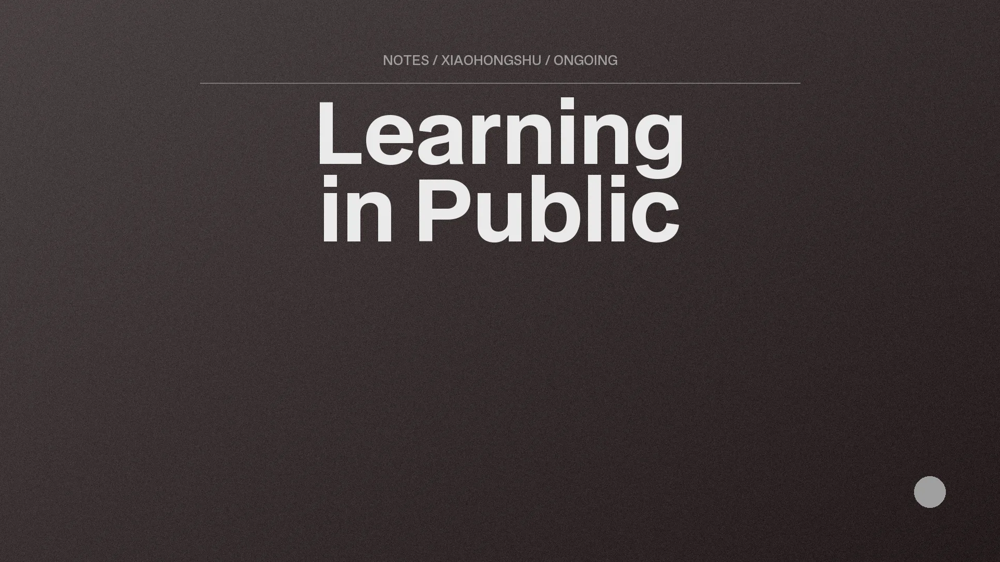
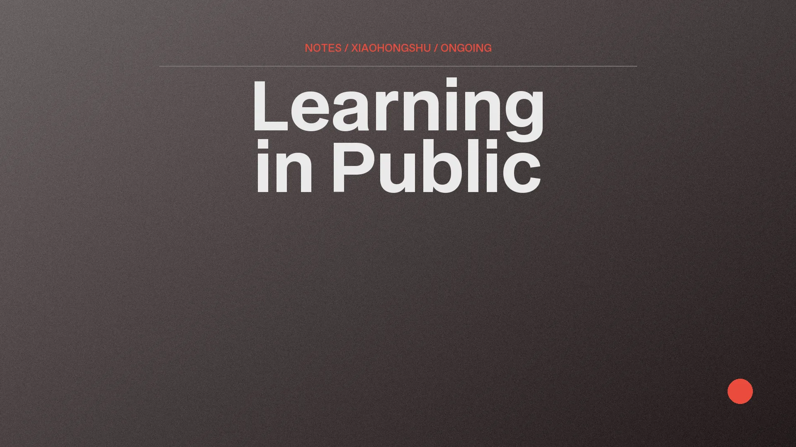
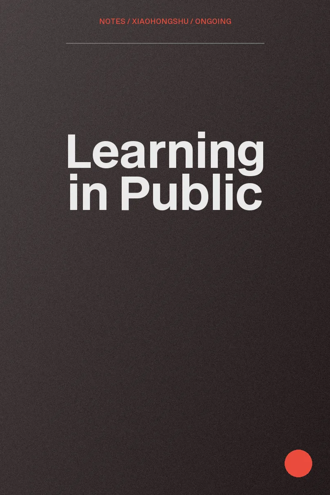

Learning in Public

Project Description
I write about the AI tools I genuinely use day to day and where they break. No tutorial voice, no hype. The point is to make the useful parts of the process findable by whoever needs them next.
It doubles as a public log of what I am building, so anyone reading this site can see whether I am still making things.
Project Details
- Platform
- Xiaohongshu
- Topics
- AI tools in daily use, and where they fail
- Cadence
- When there is something worth saying
- Status
- Ongoing


Why public
Writing it down forces me to check whether a workflow actually works or whether I only think it does. Most of the mistakes in the notes are mine.